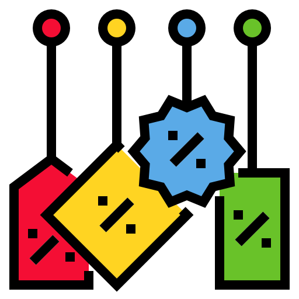

Services
Bringing your vision to life through computer vision
AI systems development
development of computer vision systems tailored to specific client needs,Which may involve designing hardware, developing algorithms, and implementing software to bring the system to life.
Image and video analysis
Using computer vision algorithms to extract insights from visual data,including object detection, tracking, segmentation, recognition, and classification tasks in images and videos.

Data annotation and labeling
manually or automatically adding descriptive information to raw data, which helps machine learning or computer vision algorithms to understand and analyze the data more accurately and efficiently.

Machine learning and deep learning
As a computer vision engineer with expertise in ML and deep learning, I can offer services to develop custom models for clients or fine-tune pre-trained models to meet specific project requirements.